Reliably Ever After
transcription
The project
This project aims to provide a comparison between the performance of Trankribus and ChatGPT on the transcription of printed text. In particular, we have chosen to conduct an analysis on the text "Lo Cunto de li Cunte" by Giambattista Basile, a Neapolitan author of the 17th century, using the edition of 1788 by Porcelli.
We decided to focus on this specific topic for our project due to a personal interest in this author, who is not very well-known in the Italian literary scene. In fact, given that we all have a background in the humanities, we had often come across his name during our studies but never had the opportunity to explore it in depth. Additionally, we thought it would be interesting to conduct an analysis of his texts to engage with a different literary language, as the writing in “Lo cunto de li cunte” is entirely based on the Neapolitan dialect, so the transcription of his text was positively challenging for us.
We also found it very stimulating to observe the origins of many stories that are still deeply ingrained in today's collective imagination. Rediscovering their roots — sometimes rather dark ones — we noted that, despite the centuries that have passed, these works remain highly relevant and continue to have a strong following.
Context
The author
Gian Battista Basile (1575-1632) was a neapolitan writer, he served as a courtier for various Italian nobles and held administrative roles in cities around Naples.
He is best remembered for his collection of folktales, "Lo Cunto de li Cunte", also known as "The Tale of Tales" or "The Pentamerone." This work, written in Neapolitan dialect, is considered one of the earliest and most influential fairy tale collections in Europe, that has inspired several other authors.
“Lo Cunto de li Cunte” contains 50 stories told over 5 days by 10 narrators, with a general frame story. The tales include early versions of many famous fairy tales later popularized by authors like the Brothers Grimm, such as Cinderella, Rapunzel, and Sleeping Beauty.
The success of Basile’s work and its popularity are due to both the subjects covered and the language used. These are, in fact, fairy tales drawn from Neapolitan folklore and narrated in the local popular dialect, yet they are crafted with literary expertise, as true novellas. Thus, despite their popular origins, with magical and comic elements, and the use of Neapolitan dialect, the author manages to elevate his text through the use of literary marvels, particularly thanks to the masterful Baroque use of metaphor and the employment of astonishing imagery. In this way, a kind of dissonance is created between the themes and the chosen language, giving rise to a truly original and masterful work, unique in its kind.
Lo cunto de li cunti remains a cornerstone of Italian and European literary history and continues to be studied for its cultural and linguistic significance.
- Period: 17th century
- Context: Naples
- Main work "Lo Cunto de li Cunti"
- Language: neapolitan dialect
Documents
Lo cunto de li cunte
foto del testo
riassunto (?)
La secchia rapita
foto del testo
riassunto (?)
Total transcribed pages
Total transcribed words
Hard Workers
Cunti
Vogliamo far vedere alcune delle pagine che abbiamo trascritto?? (non lo so, anche no hahah).
magari anche solo due bottoni uno per tassoni e uno per basile
- All
- Lo cunto de li cunte
- La secchia rapita


{kind=link}
{kind=link}
Workflow
In order to create a high-quality, reliable, and valid project, it is essential to adhere to a well-defined project baseline which includes all the crucial steps that must be successfully completed to achieve excellent results
Task defintion
Corpus selection
Our training corpus is based on the printed edition of the collection of tales Lo cunto de li cunti, authored by the well known neapolitan writer Giambattista Basile. In particular, we have selected Porcelli’s 1788 printed edition of this masterpiece, which is easily accessible on Europeana. Rather than analyzing the entire work, we focused on the Introduction (titled Ntroduzzeione), which spans 11 pages, and two of the many tales in the collection: La gatta Cenerentola (9 pages) and Vardiello (8 pages). We have fully transcribed the introduction and La gatta Cenerentola in their entirety, along with the first four pages of Vardiello. In total, this amounts to 23 transcribed pages and 6134 words from Lo cunto de li cunti. These transcriptions were used to build the training corpus. For validation, we automatically selected 10% of the training set, which corresponded to page 8 of the Introduction and page 7 of La gatta Cenerentola.
Annotation guidelines
Since the printed texts are written in 17th-18th century neapolitan dialect, they were generally pretty well understandable. We decided to manually transcribe them using Transkribus, starting from scratch and doing most of the work without relying on any pre-existing transcriptions of the texts.
First, we uploaded the images of the pages from the selected collection of tales, which we had downloaded in .png format from the Europeana source previously mentioned. Then, within Transkribus, we transcribed the documents with the images displayed side by side, making the process more straightforward.
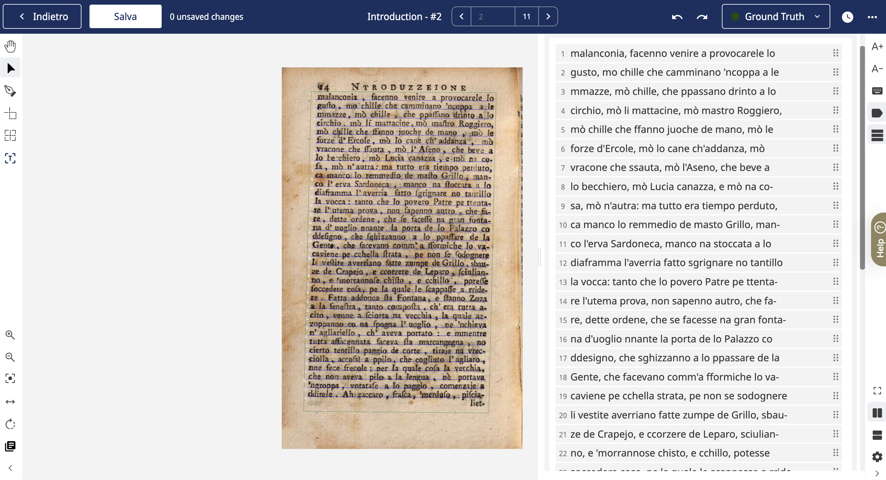
Then, we divided and organized the text in each image into different regions and underlined the lines of text with a blue baseline. These two steps are fundamental for establishing the reading order of the text once it has been transcribed.
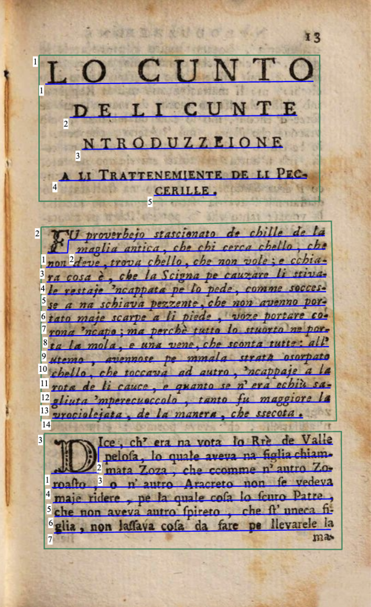
Once the documents were structured with regions and baselines, we began transcribing the texts. To ensure accuracy and create a well-structured, reliable, and unambiguous annotated corpus, we developed a detailed annotation guideline that outlined the rules we followed during the transcription process.
The transcription followed the text for what concerns:
Issue |
Example
Solution | |
|---|---|---|
| Punctuation | 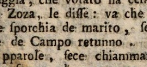 | The transcription followed the original text for what concerns traditional puntuation such as comma, colon, full stop, semicolon, question mark, exclamation mark, single and double quotation marks and apostrophe. |
| Uppercase and lowercase letters | 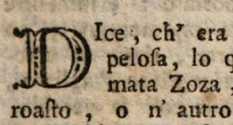 | The transcription followed the original text for what concerns uppercase and lowercase letters. In those cases in which the sentence began with a drop cap followed by another uppercase letter we have decided to stick to the original text and to transcribe both the letters in uppercase. |
| Italic text | 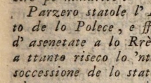 | The transcription followed the original text for what concerns italic texts. They are represented through the dedicated "I" Italic tag of Transkribus. |
| Diacritical characters | 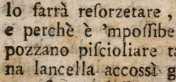 | All the accents have been transcribed according to the original text (such as "perchè"). |
| Hyphenated words | 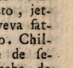 | Hyphenated words that appeared at the end of the line have been transcribed by breaking them up according to the original text. This means that they were graphically represented by adding a “-” at the end of the line only if present. |
In order to create a clear, defined and simple corpus that could be easily understood and trained we have decided to reduce and, when possible, even remove unclear and missing parts:
Issue |
Example
Solution | |
|---|---|---|
| Numbers | 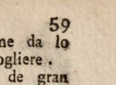 | Numbers of pages, positioned at the bottom, have been ignored. |
| Headers | 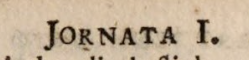 | Headers, that appear on the top of each page, have been ignored since they repeat the main title of the work and are not crucial for our task. |
| Catch-words | 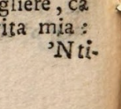 | Catch-words, placed at the end of the text, have been discarded since they consist of one syllable or one word that anticipate the first word of the following page. |
| Signature marks | 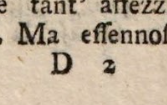 | Signature marks, located below the print space, have not been considered since they state the sheet or the position in the entire work. |
However, we have employed some specific solutions for the challenges related to the peculiarities of the texts:
Issue |
Example
Solution | |
|---|---|---|
| S-characters/graphemes | 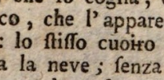 | S-characters/graphemes were transcribed as round-s. The letter “s” can appear in different forms, such as normal and long “s” (with descender, as can be seen in "stisso" in the text), which have been transcribed as normal round-s. |
| Unclear | 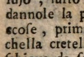 | Unclear letters, words and passages have been highlighted with the dedicated “unclear” tag provided by Transkribus. |
| Gap | 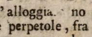 | Missing letters and words that left empty spaces have been highlighted with the dedicated “gap” tag provided by Transkribus. |
After completing the transcription of all the selected images of the texts, and before starting the training of a Text Recognition model, we assigned the transcribed pages to the Ground Truth state. The Ground Truth consists of accurate and verified reference data, including the images and their corresponding precise transcriptions, which the model will use for learning and training.
This data is crucial for the success of the model, as machine learning statistically replicates the patterns found in the provided data.
Once the Ground Truth pages are prepared, the next step is to train the Text Recognition model.
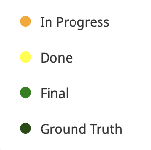
ChatGPT
We continued our analysis using ChatGPT.
For this step, we provided ChatGPT with the selected images of the texts. However, unlike our approach with Transkribus, we cropped the images to include only the text, omitting headers, page numbers, and signature marks. This was done in order to ensure that the input images were as simple and clear as possible for transcription.
Additionally, we instructed ChatGPT to transcribe the text from the input images while preserving the original line breaks.
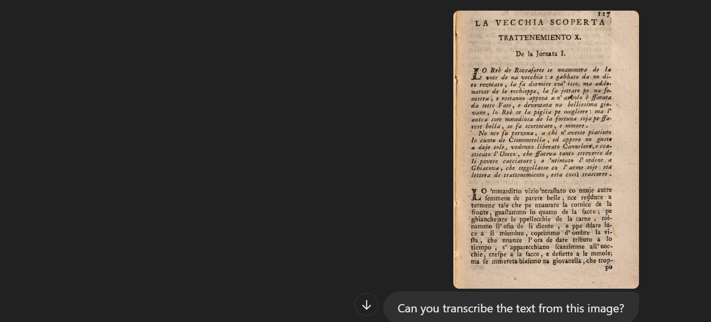
Sumary
Brandon Johnson
Innovative and deadline-driven Graphic Designer with 3+ years of experience designing and developing user-centered digital/print marketing material from initial concept to final, polished deliverable.
- Portland par 127,Orlando, FL
- (123) 456-7891
- alice.barkley@example.com
Education
Master of Fine Arts & Graphic Design
2015 - 2016
Rochester Institute of Technology, Rochester, NY
Qui deserunt veniam. Et sed aliquam labore tempore sed quisquam iusto autem sit. Ea vero voluptatum qui ut dignissimos deleniti nerada porti sand markend
Bachelor of Fine Arts & Graphic Design
2010 - 2014
Rochester Institute of Technology, Rochester, NY
Quia nobis sequi est occaecati aut. Repudiandae et iusto quae reiciendis et quis Eius vel ratione eius unde vitae rerum voluptates asperiores voluptatem Earum molestiae consequatur neque etlon sader mart dila
Professional Experience
Senior graphic design specialist
2019 - Present
Experion, New York, NY
- Lead in the design, development, and implementation of the graphic, layout, and production communication materials
- Delegate tasks to the 7 members of the design team and provide counsel on all aspects of the project.
- Supervise the assessment of all graphic materials in order to ensure quality and accuracy of the design
- Oversee the efficient use of production project budgets ranging from $2,000 - $25,000
Graphic design specialist
2017 - 2018
Stepping Stone Advertising, New York, NY
- Developed numerous marketing programs (logos, brochures,infographics, presentations, and advertisements).
- Managed up to 5 projects or tasks at a given time while under pressure
- Recommended and consulted with clients on the most appropriate graphic design
- Created 4+ design presentations and proposals a month for clients and account managers
Evaluation
Once the Ground Truth text for our corpus was ready, we proceded with the Text Recognition Model training (as a reminder, the number of pages transcribed was 23, for a total of 6134 words). We decided to train two models on Basile's Lo Cunto de li Cunte edition. The first one, exclusively trained on our Ground Truth transcriptions, performed pretty well, with a CER on the validation set of 0.67%. In order to further decrease the character error rate, we fine-tuned our model by selecting the multi-language model Transkribus Print M1, trained on printed texts written in several languages, among which italian. By doing so, the CER on the validation set went down to 0.24%. This model, as the best performing one, was then selected for the comparison with ChatGPT.
The charts show the percentage of error (on the y-axis) for both the training and the validation set over the epochs (x-axis). Transkribus' default paramethers were adopted for the training of both the models: the number of epochs was set to 100 and the early stoppings to 20. As shown in the figures above, the first model stopped the training after 87 epochs, since there was no further improvement on the CER, while the second one stopped after 96 epochs.
The fine-tuned model was then used to automatically transcribe our test set, for which we chose a selection of pages from a fourth tale included in Lo Cunto de li Cunte, namely La vecchia scoperta. The same pages were then fed to ChatGPT and both the results of our custom model text recognition and the automatic transcription obtained with GPT were compared with our Ground Truth transcription for the test set.
The following sections present a detailed discussion of the results.
Transkribus
Custom Model
As mentioned in the Workflow section, our main goal was to train a model able to faithfully transcribe the text as printed on the page, with the only disclaimer of the normalization of s-graphemes, that the model should therefore have been able to interpret correctly by the end of the training. As consistenly used throughout the edition, we also decided to tag italic text as such, but the ability of the model to identify and mark the text was not our primary concern as not relevant for the performance evaluation comparison.
Given that, according to Transkribus documentation, a model for printed text with a CER on the validation set between 0.5% and 2% is believed to be very efficient, we can consider both the trained model highly performing. As mentioned above, however, we selected Basile Printed_fine-tuned for automatically transcribing the pages from La vecchia scoperta. Based on the transcription of unseen pages, we can say that:
- Overall transcription: the transcription needed few corrections, mainly on those sections of the page there were not part of the validation set - like the headings that introduce each tale - or more complex elements, like drop-caps. Text Recognition Models can be applied with or without a previous layout recognition. In our case, the direct application of the text recognition model caused the recognition and transcription of page numbers and catch-words, so, in order to consistently identify regions, it was necessary to perform a manual segmentation and re-apply the Text Recognition Model on the segmented pages.
- S-graphemes normalization: the model correctly identified and transcribed the majority of s-graphemes.
- Tags for italic text: as shown in Fig. 5.1, the model wasn't able to tag italic text.
Super Model
Unlike Pylaia models, Super Models are transformer-based and able to deal with both printed and handwritten text. As explained in Transkribus documentation, these models consist of both an optical part for image processing and a language model which can handle different languages from different times. As example of Language Model, Super Models are closer to ChatGPT for kind of training and functioning, so we thought it would be interesting to evaluate their performance on the selected text as well and to later compare it with GPT's automatic transcription. Though Italian texts where not part of the training set, the most comprehensive model was Text Titan I, supposedly efficient for both handwritten and printed texts and trained on a corpus that spans from XVI to XXI century.
ChatGPT
Our next step was to prompt ChatGPT by presenting it the same pages used for testing Transkribus' fine-tuned model. As shown in the following figure, the first transcription provided by GPT took into account page numbers and catch-words and collapsed line breaks.
In a following phase we asked ChatGPT to preserve line breaks in the transcription and, in order to obtain a transcription compliant with our annotation guidelines, to ignore page numbers, catch-words and, where needed, running titles.
A quick analysis of the transcription provided by ChatGPT shows that, unlike Transkribus' model, there wasn't any difficulty in the transcription of headings, while the most troublesome element, as expected, is represented by the normalization of s-graphemes.
Results
In order to evaluate the performance of Transkribus' trained model and ChatGPT on our test set, we computed the Word Error Rate (WER) and Character Error Rate (CER) for both the automatic transcriptions by comparing them with our Ground Truth transcription, using the Python library pywer. The results, presented in the table below, show a better performance for the trained custom model:
| WER | CER | |
|---|---|---|
| Basile Printed_fine-tuned | 2.18 | 0.47 |
| ChatGPT | 24.65 | 5.45 |
Conclusion
Necessitatibus eius consequatur ex aliquid fuga eum quidem sint consectetur velit
tema che abbiamo scelto
contesto in cui si colloca
motivo della scelta di questo tema?
To be continued...
Since we observed that the model we developed functions correctly and has a relatively low margin of error, we couldn’t help but reflect on its potential future applications. We then thought it would be interesting to apply this model to another printed text from the same period but belonging to a different context, to evaluate whether the results would be equally satisfactory.
We therefore identified the 1779 edition by Masi e Com. of the text *La Secchia Rapita* written by Alessandro Tassoni. It is a mock-heroic poem, whose tone is very similar to that of “Lo cunto de li cunti”,, but the context is quite different. Tassoni, in fact, is a Modenese author who employs a completely different style, ranging from epic tones to sudden shifts into more burlesque ones. Clearly, there is no trace of Neapolitan in his work; instead, he draws from the language first used by Ariosto and later by Tasso, with the addition of comedic, popular elements.
References
- Transkribus Help Center:
- Transcribing Manually
- Training Text Recognition Models
- Data Preparation
- Model Setup and Training
- Character Error Rate and Learning
- Super Models
- Choosing a Model
- On ChatGPT and text recognition:
- GPT-4 Technical Report
About us
The team is enrolled in the master degree course in Digital Humanities and Digital Knowledge at the Univeristy of Bologna. This work was realized as a project for the Semantic Digital Libraries course.
Francesca Gaeta
Humanistic background, graduated in Cultural Heritage at the University of Naples. DHDK student University of Bologna